Персонажи / Итто
Лучшие отряды: Итто
5★ · Гео · Двуручный меч · отрядов в базе: 51 · лучший DPS 71 259
Открыть в GI-Rec
Лучшие отряды
1 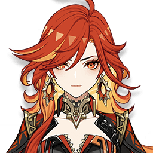
Мавуика C0 Меч драконьей кости R1 Обсидиановый фолиант ×4 Итто C0 Двуручный меч Фавония R3 Архаичный камень ×4 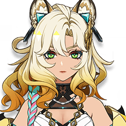
Шилонен C0 Меч Фавония R3 Свиток героя сожжённого города ×4 Кэйа C6 Меч Фавония R3 Церемония древней знати ×4 71 259DPS Симуляция 2 Итто C0 Меч драконьей кости R1 Клятва долгой ночи ×4 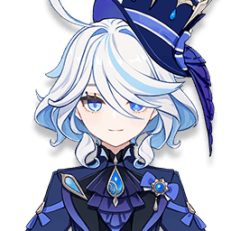
Фурина C0 Меч Фавония R3 Стойкость Миллелита ×4 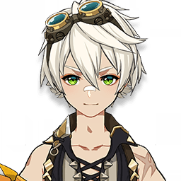
Беннет C6 Вспышка во тьме R1 Церемония древней знати ×4 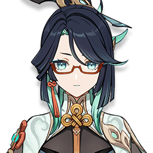
Сянь Юнь C0 Око клятвы R5 Изумрудная тень ×4 67 483DPS KQMS Симуляция 3 Итто C0 Белая тень R5 Охотник Сумеречного двора ×4 Шилонен C0 Меч Фавония R3 Свиток героя сожжённого города ×4 Фурина C0 Осквернённое желание R5 Золотая труппа ×4 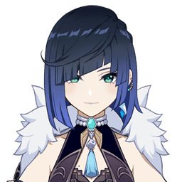
Е Лань C0 Боевой лук Фавония R4 Эмблема рассечённой судьбы ×4 66 208DPS KQMS Симуляция 4 Итто C0 Белая тень R5 Охотник Сумеречного двора ×4 Шилонен C0 Меч Фавония R3 Свиток героя сожжённого города ×4 Фурина C0 Меч Фавония R3 Золотая труппа ×4 Мавуика C0 Меч драконьей кости R1 Обсидиановый фолиант ×4 64 765DPS KQMS Симуляция 5 Итто C0 Меч драконьей кости R1 Кокон сладких грёз ×4 Шилонен C0 Меч Фавония R3 Свиток героя сожжённого города ×4 Фурина C0 Меч Фавония R3 Золотая труппа ×4 Сянь Юнь C0 Око клятвы R5 Моллюск морских красок ×4 62 637DPS KQMS Симуляция 6 Итто C0 Белая тень R5 Охотник Сумеречного двора ×4 Шилонен C0 Меч Фавония R3 Свиток героя сожжённого города ×4 Фурина C0 Меч Фавония R3 Золотая труппа ×4 Эскофье C0 Смертельный бой R1 Золотая труппа ×4 61 356DPS KQMS Симуляция 7 Итто C0 Меч драконьей кости R1 Охотник Сумеречного двора ×4 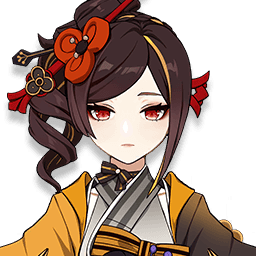
Тиори C0 Киноварное веретено R5 Золотая труппа ×4 Сянь Юнь C0 Кодекс Фавония R3 Моллюск морских красок ×4 Фурина C0 Меч Фавония R3 Золотая труппа ×4 61 202DPS KQMS Симуляция 8 Итто C0 Белая тень R5 Охотник Сумеречного двора ×4 Шилонен C0 Меч Фавония R3 Свиток героя сожжённого города ×4 Фурина C0 Осквернённое желание R5 Золотая труппа ×4 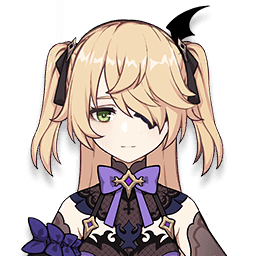
Фишль C6 Разбивающий цепи R5 Золотая труппа ×4 60 841DPS KQMS Симуляция 9 Итто C0 Белая тень R5 Охотник Сумеречного двора ×4 Шилонен C0 Меч Фавония R3 Свиток героя сожжённого города ×4 Фурина C0 Осквернённое желание R5 Золотая труппа ×4 Син Цю C6 Меч Фавония R3 Эмблема рассечённой судьбы ×4 60 612DPS KQMS Симуляция 10 Итто C0 Меч драконьей кости R1 Кокон сладких грёз ×4 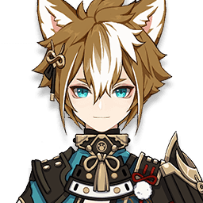
Горо C6 Боевой лук Фавония R4 Изгнанник ×4 Фурина C0 Меч Фавония R3 Золотая труппа ×4 Сянь Юнь C0 Око клятвы R5 Моллюск морских красок ×4 58 762DPS Симуляция 11 Итто C0 Меч драконьей кости R1 Клятва долгой ночи ×4 Фурина C0 Меч Фавония R3 Золотая труппа ×4 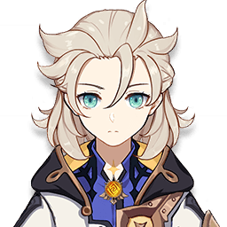
Альбедо C0 Киноварное веретено R5 Золотая труппа ×4 Сянь Юнь C0 Кодекс Фавония R3 Моллюск морских красок ×4 58 629DPS KQMS Симуляция 12 Итто C0 Меч драконьей кости R1 Кокон сладких грёз ×4 Чжун Ли C0 Копьё Фавония R3 Стойкость Миллелита ×4 Тиори C0 Предвестник зари R5 Золотая труппа ×4 Горо C6 Боевой лук Фавония R4 Церемония древней знати ×4 55 544DPS KQMS Симуляция 13 Итто C0 Меч драконьей кости R1 Кокон сладких грёз ×4 Горо C6 Боевой лук Фавония R4 Изгнанник ×4 Фурина C0 Меч Фавония R3 Золотая труппа ×4 Тиори C0 Киноварное веретено R5 Золотая труппа ×4 55 050DPS Симуляция 14 Итто C0 Меч драконьей кости R1 Охотник Сумеречного двора ×4 Шилонен C0 Меч Фавония R3 Свиток героя сожжённого города ×4 Фурина C0 Осквернённое желание R5 Золотая труппа ×4 Беннет C6 Вспышка во тьме R1 Церемония древней знати ×4 54 908DPS KQMS Симуляция 15 Итто C0 Меч драконьей кости R1 Кокон сладких грёз ×4 Горо C6 Боевой лук Фавония R4 Изгнанник ×4 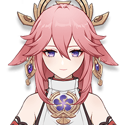
Яэ Мико C0 Песнь странника R3 Золотая труппа ×4 Тиори C0 Предвестник зари R5 Кокон сладких грёз ×4 54 527DPS Симуляция 16 Итто C0 Меч драконьей кости R1 Кокон сладких грёз ×4 Горо C6 Боевой лук Фавония R4 Изгнанник ×4 Фишль C6 Охотник во тьме R1 Золотая труппа ×4 Тиори C0 Предвестник зари R5 Кокон сладких грёз ×4 52 984DPS Симуляция 17 Итто C0 Двуручный меч Фавония R3 Охотник Сумеречного двора ×4 Эскофье C0 Тамаюратэй но оханаси R5 Золотая труппа ×4 Е Лань C0 Боевой лук Фавония R4 Эмблема рассечённой судьбы ×4 Фурина C0 Осквернённое желание R5 Золотая труппа ×4 52 140DPS KQMS Симуляция 18 Итто C0 Меч драконьей кости R1 Кокон сладких грёз ×4 Чжун Ли C0 Копьё Фавония R3 Стойкость Миллелита ×4 Альбедо C0 Киноварное веретено R5 Золотая труппа ×4 Тиори C0 Предвестник зари R5 Кокон сладких грёз ×4 51 335DPS KQMS Симуляция 19 Итто C0 Меч драконьей кости R1 Кокон сладких грёз ×4 Альбедо C0 Киноварное веретено R5 Золотая труппа ×4 Горо C6 Боевой лук Фавония R4 Церемония древней знати ×4 Чжун Ли C0 Копьё Фавония R3 Стойкость Миллелита ×4 50 324DPS KQMS Симуляция 20 Итто C0 Меч драконьей кости R1 Кокон сладких грёз ×4 Горо C6 Боевой лук Фавония R4 Изгнанник ×4 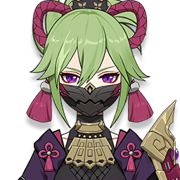
Синобу C6 Меч Фавония R3 Стойкость Миллелита ×4 Тиори C0 Предвестник зари R5 Кокон сладких грёз ×4 49 730DPS Симуляция
Вид по умолчанию: 5★ персонажи на C0, 4★ на C6, без гача 5★ оружия. Другие созвездия и оружие — в приложении.
Чаще всего в отряде с
Другие персонажи: Гео